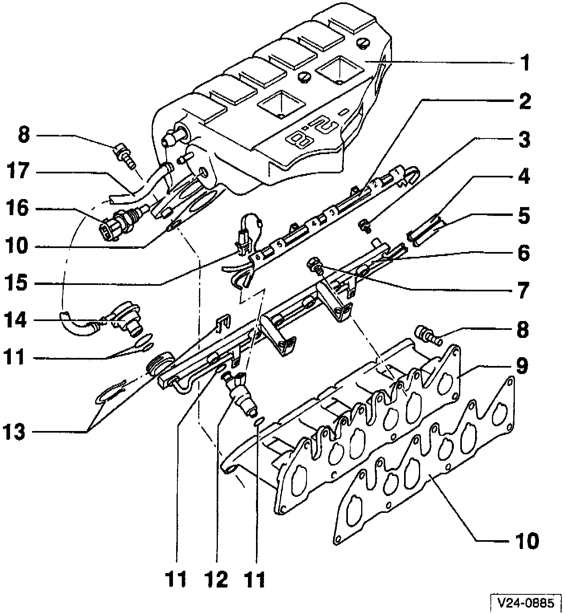

Fuel Rail and Intake Manifold

1 - Intake manifold, upper
2 - Cable duct
3 - Sealing plug
^ for fuel pressure test connection
4 - Fuel line, supply
^ white marking
5 - Fuel line, return
^ blue marking
6 - Fuel rail
7 - 10 Nm (7 ft lb)
8 - 25 Nm (18 ft lb)
9 - Intake manifold, lower
10 - Gasket
^ always replace
11 - O-ring
^ replace if damaged
12 - Fuel Injector N84
^ N30 - N33 for cylinders 1 thru 4
^ N83 for cylinder 5
13 - Retaining clip
^ check that clip is securely seated
14 - Fuel Pressure Regulator
15 - Connector
^ 2-pin
^ for fuel injectors
16 - Intake Air Temperature (IAT) Sensor G72
^ tightening torque: 10 Nm (7 ft lb).
17 - Vacuum line
^ replace if damaged
^ check that line is securely seated